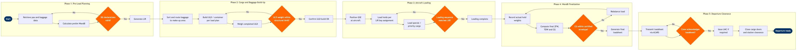

Load Control & Aircraft Loading
Ground Operations & Airport Services › Ramp & Turnaround Operations · 20 L4 steps · 5 phases · 4 decision gates · Updated 2026-10-01 20:51
📊
Process Flow Diagram (BPMN)

📋
L4 Process Steps
| Step | Step Name | Role / Swim Lane | System | Input | Output | KPI | Dec? | Exc? |
|---|---|---|---|---|---|---|---|---|
Phase 1 1.1 |
Retrieve Final Pax Count & Baggage Weights | Load Controller | Amadeus Altéa PSS | Check-in closure trigger (T-30 min); APIS/DCS pax manifest | Confirmed pax count, checked-bag count, total baggage weight | Data retrieval completed ≤5 min after check-in close | N | N |
| 1.2 | Calculate Preliminary Weight & Balance | Load Controller | SITA LoadManager | Pax manifest, estimated bag weights, fuel uplift from ACARS | Preliminary zero fuel weight (ZFW), centre of gravity (CG) estimate, hold allocation plan | Preliminary W&B issued ≤10 min after check-in close | N | N |
| 1.3 | Validate Dangerous Goods Declarations | DG Acceptance Agent | SITA DGM (Dangerous Goods Manager) | Shipper's Declaration for Dangerous Goods (SHPD), NOTOC entries from cargo manifest | Validated DG NOTOC; approved or rejected DG items with segregation instructions | DG validation completed ≤15 min before cargo loading commences; zero IATA DGR Part 7 segregation violations | Y | Y |
| 1.4 | Generate Loading Instruction Report (LIR) | Load Controller | SITA LoadManager | Approved hold allocation plan, DG segregation instructions, special cargo positions | Loading Instruction Report (LIR) specifying bay/pit assignment per item type | LIR issued to ramp supervisor ≤20 min before scheduled loading start | N | N |
Phase 2 2.1 |
Sort & Route Checked Baggage to Make-Up Area | Baggage Make-Up Agent | SITA BagManager | Baggage reconciliation data from Altéa, belt assignment from SITA AMS | Sorted baggage staged at correct make-up carousel/area for the flight | Baggage sortation accuracy ≥99.5%; all bags at make-up area ≥30 min before STD | N | Y |
| 2.2 | Build ULD / Container per Load Plan Spec | Baggage Make-Up Agent | SITA LoadManager | LIR bay assignments, sorted baggage at make-up area | Loaded ULD/containers tagged with position ID and estimated weight | ULD build completed per LIR sequence; zero wrong-position items at loading start | N | N |
| 2.3 | Weigh Completed ULD / Container | Baggage Make-Up Agent | Mettler Toledo ULD Scale + SITA LoadManager | Loaded ULD on weigh platform | Actual ULD gross weight recorded in LoadManager against plan position | 100% of ULDs weighed before loading; weight variance vs estimate ≤±50 kg per ULD | Y | N |
| 2.4 | Confirm ULD Weight Within Structural Limit | Load Controller | SITA LoadManager | Actual ULD weight vs aircraft structural limit per bay (from Boeing aircraft performance data) | ULD cleared for loading or redistributed; updated hold allocation if rebalancing required | Zero structural limit exceedances reaching the aircraft; resolution time ≤8 min per overweight ULD | Y | Y |
Phase 3 3.1 |
Confirm Ground Equipment Positioning at Aircraft | Ramp Supervisor | SITA Airport Management System (AMS) | Gate assignment from SITA AMS, loading start trigger from Load Controller | Baggage loaders / hi-loaders and belt loaders confirmed in position; loading authorised | GSE at aircraft ≤5 min after aircraft-on-blocks; zero loading delays attributable to GSE unavailability | N | N |
| 3.2 | Load Cargo Holds per LIR Bay Assignment | Ramp Agent | SITA LoadManager (tablet / handheld scan) | LIR bay assignment, loaded ULDs/bulk bags at aircraft side | Items loaded into designated holds; barcode scan confirmation per piece | Loading compliance with LIR ≥99%; fwd/aft hold loaded within 20 min of start for narrowbody | N | N |
| 3.3 | Load Special & Priority Items per NOTOC | Ramp Supervisor | SITA DGM + SITA LoadManager | Approved NOTOC, special cargo labels (live animals, wet ice, perishables, human remains) | Special cargo positioned per segregation rules and NOTOC; supervisor sign-off recorded | 100% NOTOC items loaded in approved positions; zero segregation violations on departure | N | Y |
| 3.4 | Verify Loading Sequence Matches LIR | Ramp Supervisor | SITA LoadManager | Scan confirmations from step 3.2, LIR bay plan | Loading conformance report — approved to proceed or discrepancy flagged for correction | Loading conformance check completed before any hold door closed; discrepancy resolution ≤10 min | Y | Y |
Phase 4 4.1 |
Record Actual Loaded Weights per Hold | Load Controller | SITA LoadManager | Scan-confirmed item list per hold bay from step 3.4 | Actual hold-by-hold weight breakdown entered in LoadManager for final W&B run | All hold weights entered within 5 min of loading completion | N | N |
| 4.2 | Compute Final ZFW, TOW & CG Position | Load Controller | SITA LoadManager + Boeing Aircraft Performance Tool (OPT) | Actual hold weights, confirmed fuel uplift, final pax count with no-shows applied | Final Zero Fuel Weight (ZFW), Take-Off Weight (TOW), Landing Weight (LW), and CG index value | Final W&B calculation completed ≤15 min before STD; TOW within ±0.5% of fuel plan | N | N |
| 4.3 | Confirm CG Within Certified Envelope | Load Controller | Boeing Aircraft Performance Tool (OPT) | Final CG index, aircraft type CG envelope limits, trim setting | CG confirmed in-envelope and stabiliser trim setting issued to crew; or rebalance instruction issued | CG in-envelope on first calculation ≥95% of flights; rebalance time ≤15 min when required | N | Y |
| 4.4 | Generate & Sign Final Loadsheet | Load Controller | SITA LoadManager | Approved ZFW, TOW, CG, trim setting; final pax/bag count | Signed final loadsheet (paper or e-loadsheet) with load controller and captain signature blocks | Final loadsheet generated ≥15 min before STD; e-loadsheet adoption rate target ≥80% | N | N |
Phase 5 5.1 |
Transmit Final Loadsheet to Flight Deck via ACARS | Load Controller | SITA ACARS | Signed final loadsheet from SITA LoadManager | Loadsheet datalink message (LDM/CPM) received on flight deck EFB or ACARS printer | ACARS loadsheet delivery confirmed ≤12 min before STD; delivery failure rate <1% | N | N |
| 5.2 | Obtain Crew Acknowledgment of Loadsheet | Captain | Jeppesen FliteDeck (EFB) + SITA ACARS | Loadsheet datalink message or paper copy delivered to flight deck | Crew acknowledgment uplinked via ACARS or paper signature returned; loadsheet accepted or queried | Crew acknowledgment received ≥10 min before STD; query resolution ≤5 min | N | N |
| 5.3 | Issue Last-Minute Change (LMC) if Required | Load Controller | SITA LoadManager | Post-loadsheet change trigger (late pax, offload, security-removed bag) | LMC document transmitted to crew; updated ZFW/CG confirmed within limits | LMC issued and acknowledged ≤7 min before pushback; LMC rate <5% of departures | N | Y |
| 5.4 | Close Cargo Doors & Issue Station Clearance | Ramp Supervisor | SITA Airport Management System (AMS) | Crew acknowledgment confirmed, LMC resolved, all hold doors secured | Station departure clearance recorded in SITA AMS; ramp-clear signal issued to tug crew | Hold doors closed and ramp-clear signal issued ≥5 min before STD; on-time departure (D0) contribution ≥85% | N | N |
📋